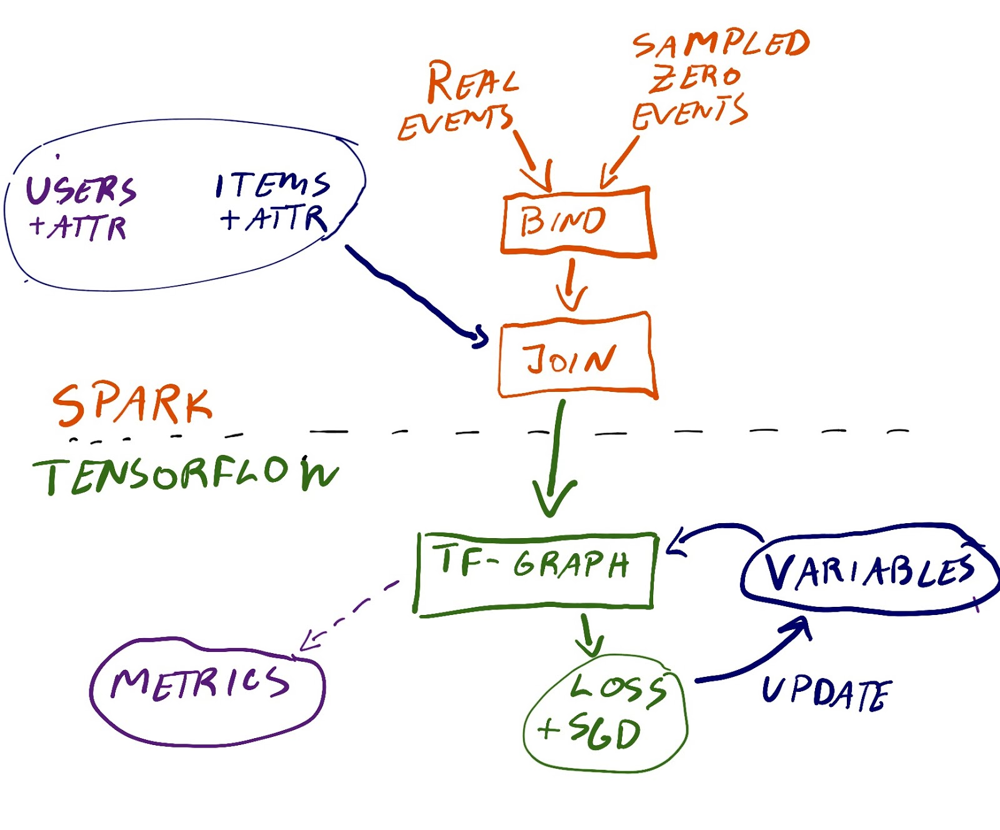

eide.ai
About
eide.ai
Dynamic Slate Recommendation with Gated Recurrent Units and Thompson Sampling
Authors: Simen Eide, David S. Leslie, Arnoldo Frigessi Publication: Data Mining and Knowledge Discovery Preprint: 5 May 2021 Publication: 19 July 2022
May 5, 2021
Bayesian Neural Nets and how to effectively train them with Stochastic Gradient Markov Chain Monte Carlo
An intuitive review of training bayesian neural nets with markov chain methods
Nov 13, 2020
Running Google Colab with VS code
Running VScode and the python extension is great for development. I get clean python files
and
can run my code interactively. It is the same setup we have at work and I then remotely connect to a server with more cpu…
Sep 14, 2020
Installing Pytorch on a raspberry pi 4
I found these wheel builds from Thomas Viehmann that worked very well on a rpi4 64 bit running python 3.7. They are
pytorch 1.6.0
and avoids the original hacks. Only issue was that my camera stopped working, but manage to circumvent it by using a different driver (v4l-utils) and using opencv’s…
Jun 30, 2020
PILCO and Deep PILCO
Papers: - Deisenroth, M. P., & Rasmussen, C.…
Jan 17, 2019
Takeaways Recsys 2018
For the first time Ive actually made a summary of all the papers and presentations I found noteworthy at a conference (allright, there were more, but this is a start). Below…
Oct 6, 2018
BPMF presentation
Slides from my presentation on “Bayesian Probabilistic Matrix Factorization using Markov Chain Monte Carlo” by Salakhutdinov and Mnih. Paper link.
Oct 6, 2018
KDD workshop Deep learning Day: Five lessons from building a deep neural network recommender for marketplaces
Ning…
Aug 19, 2018
Deep Recommenders, Car Pricing, Self driving rc-car and other projects in 2017
I am not a fan of new years resolutions. If I had been, one of my new years resolutions…
Jan 3, 2018
Deep NLP-based Recommenders at Finn.no
During a hackathon at FINN.no, we figured we wanted to learn more about deep NLP-models. FINN.no has a large database with ads of people trying to sell stuff (around 1…
Sep 11, 2017
Jupyter lab - First impression
Every three months or so I get really annoyed about Jupyter Notebook being so limited, and I usually spend half a day browsing alternatives like Spyder, PyCharm and Rodeo.…
Jul 30, 2017
Collaborative Filtering Recommendations in Spreadsheets
Most people have a…
May 28, 2017

Presentation from Oslo Data Science Meetup
In February I talked about the recommendation models we have at FINN.no, and how we work to develop…
Mar 30, 2017
No matching items